Product Overview
HDPE Tarpaulins are versatile protective sheets widely used
for covering, waterproofing, and shielding goods and surfaces
from weather and environmental exposure.
Manufactured using high-density polyethylene fabric with
laminated coating, these tarpaulins offer excellent strength,
flexibility, and long service life for both indoor and outdoor use.
Key Features
- 100% waterproof and weather resistant
- High tensile strength and tear resistance
- UV stabilized for outdoor durability
- Lightweight yet strong construction
- Reusable and easy to handle
Specifications
- Material: HDPE Fabric with LDPE Lamination
- Thickness: Varies by GSM
- Colour: Blue, Green, Orange, Silver (varies)
- Waterproof: Yes
- Usage: Indoor and outdoor protection
Applications & Use Cases
- Agriculture crop and equipment covering
- Construction site protection
- Truck, goods, and material covering
- Warehouses and storage facilities
- Temporary shelters and outdoor use
Best Suited For
- Daily-use covering in farms, godowns, and construction sites
- Short to medium-term outdoor protection during monsoon
- Transporters needing lightweight but waterproof covers
Selection Note
For Indian conditions, GSM selection should be based on wind
exposure and handling frequency. Higher GSM tarpaulins are
recommended for highway transport and repeated tying.
Commonly Used Along With
- Tarpaulin Eyelets & Grommets
- Ropes or Lashing Belts
- Floor or Ground Protection Sheets
Product FAQs
-
Which GSM HDPE tarpaulin is suitable for Indian monsoon use?
Medium to higher GSM tarpaulins are recommended during monsoon to handle
wind, rain, and frequent tying without tearing.
-
Is HDPE tarpaulin suitable for long-term outdoor exposure?
HDPE tarpaulins are UV stabilized and suitable for outdoor use,
though lifespan depends on GSM, handling, and exposure conditions.
-
Can HDPE tarpaulins be used for truck covering?
Yes. HDPE tarpaulins are commonly used for truck and goods covering
due to their lightweight, waterproof, and tear-resistant properties.
-
Do HDPE tarpaulins crack or become brittle over time?
Quality HDPE tarpaulins resist cracking when UV stabilized, but
prolonged exposure and low GSM can reduce flexibility over time.
-
How should HDPE tarpaulins be secured?
Proper tying using ropes or lashing belts through reinforced eyelets
helps prevent wind damage and tearing.
-
Are custom sizes available for bulk buyers?
Yes. HDPE tarpaulins can be supplied in custom sizes and GSMs
for bulk and project-based requirements.
 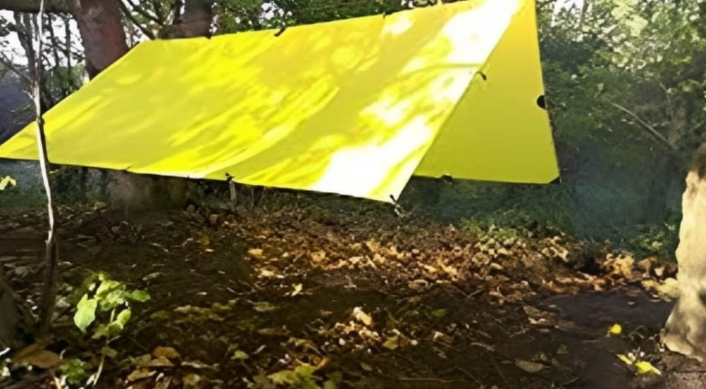
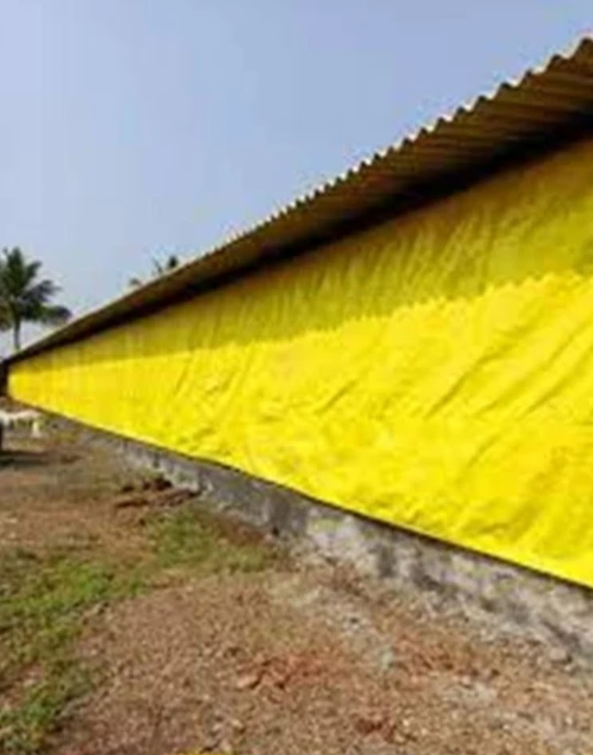
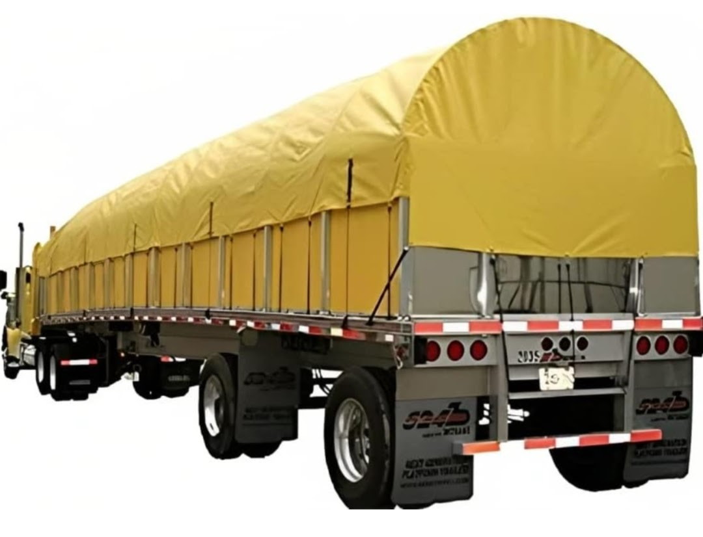
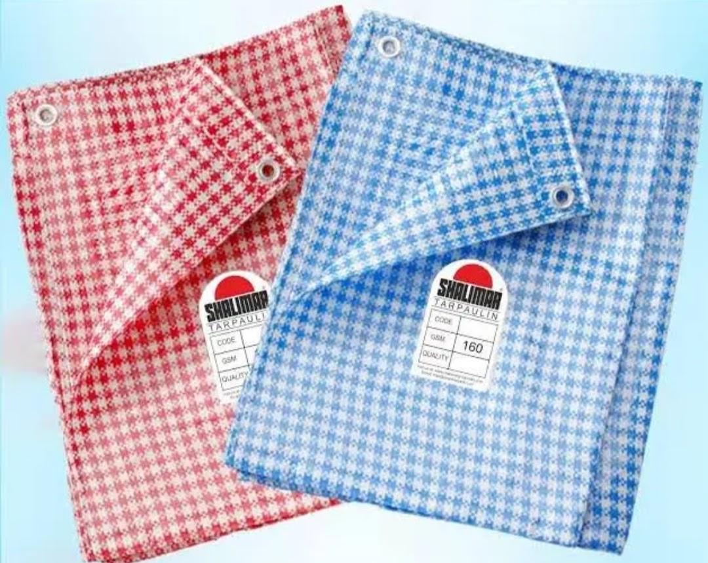
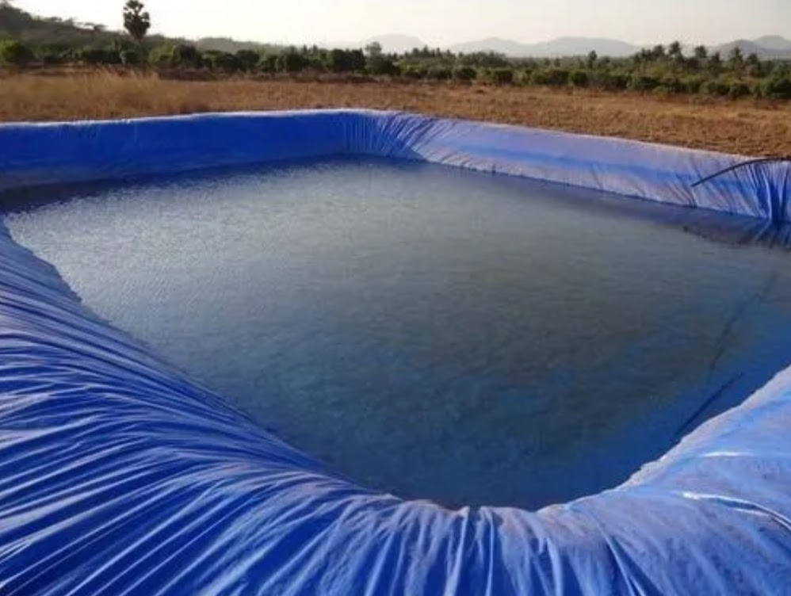
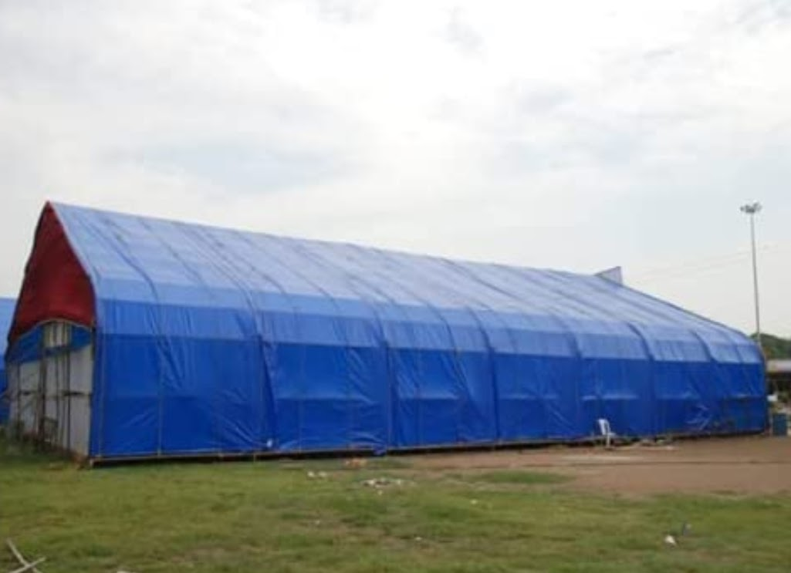
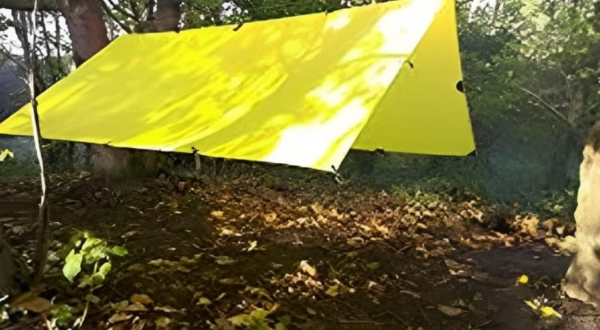
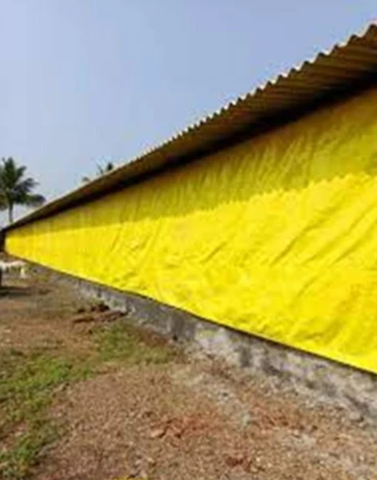
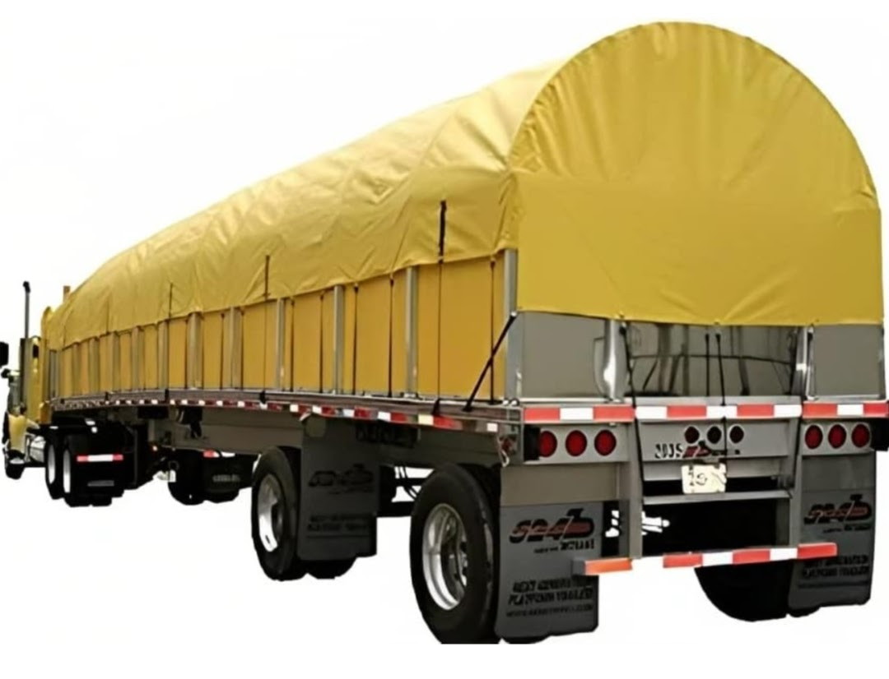
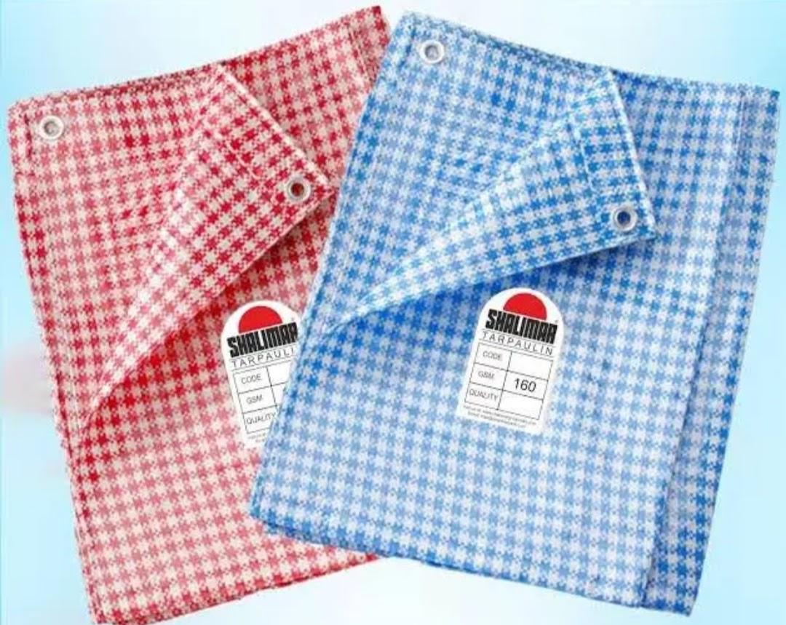
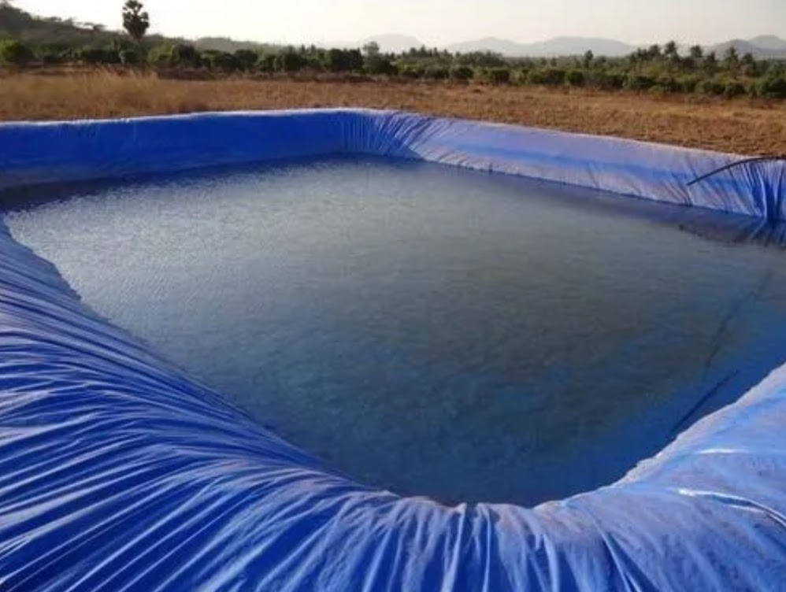
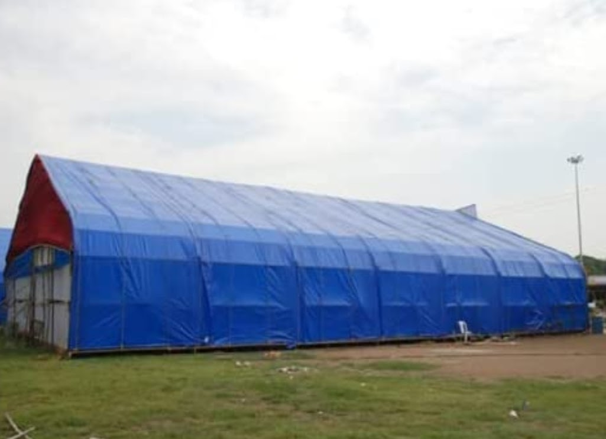